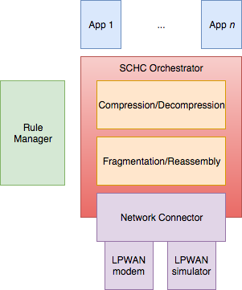

Welcome to OpenSCHC’s documentation!¶
What is OpenSCHC ?¶
OpenSCHC¶
OpenSCHC is a OpenSource Implementation of SCHC (Static Context Header Compression) currently being standardized by the LPWAN Working Group at the IETF. Oversimplifying, this is essentially IP protocl headers compression and fragmentation so that they can be transported by low datarate, long range IoT networks.
The long term goal is to have a stable, open-source, reference Python3 codebase for the SCHC protocol.
OpenSCHC is developed to be compatible with micropython, on the device side.
OpenSCHC is licensed under the MIT License .
Understanding the architecture¶
A global architecture of openSCHC implementation is shown below:
The Rule Manager stores a set of Rules and provides methods to install or retreive Rules.
Rules are composed of two elements:
A RuleID which identifies the Rule by its number, and
A content which contains an array of fields. For details, refer to the SCHC protocol
The App 1 … App n are the applications that invoke the SCHC Orchestrator to run the necessary SCHC operations, which are briefly defined below:
Compression is used on the sender side to compress the header of a packet provided by the App, using a specific rule (identified by its RuleID). Decompression: on the receiver side, upon receiving a compressed packet, the Decompresser is invoked to rebuild the original packet, using the Rule identified by the RuleID carried in the compressed packet.
Fragmentation is invoked on the sender side with a RuleID to generate a set of fragments out of a packet (compressed or uncompressed). Reassembly is used on the receiver side to reconstruct the packet out of the set of fragments.
Fragmentation modes and the associated parameters are described in the SCHC protocol .
Network Connector interfaces to a physical model to a real LPWAN network such as LoRa or Sigfox, or to a link simulator.
Using OpenSCHC¶
Want to give it a try? See Installation Guide in order to set up OpenSCHC on your computer and User Guide to start running it.
Contributing¶
Want to help ? See our Contributing Guidelines for more details on the future work on the OpenSCHC project.
Our current activity¶
Direct link to the Etherpad for on-line information exchange at the IETF Hackathons : https://etherpad.tools.ietf.org/p/openschc